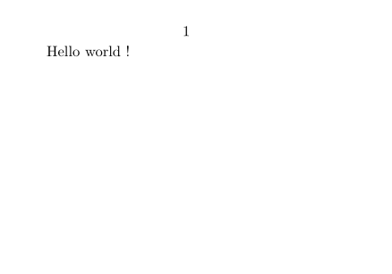
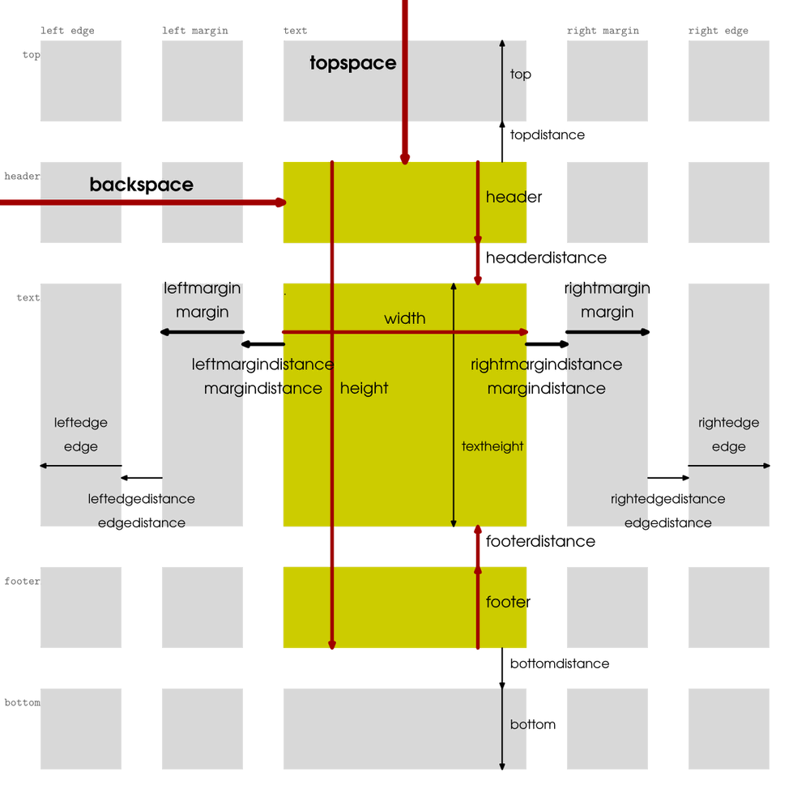
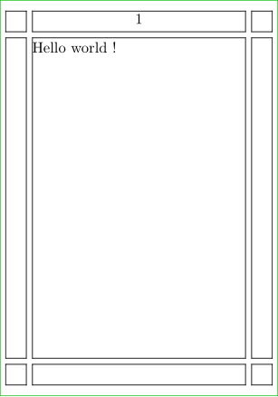
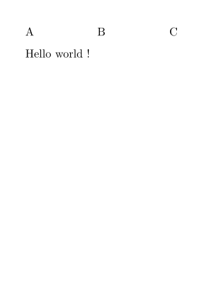
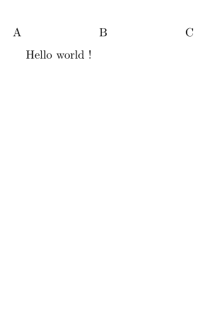
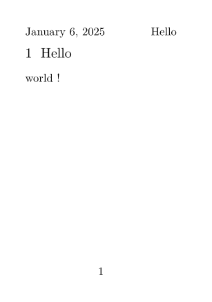
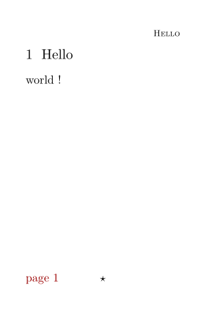
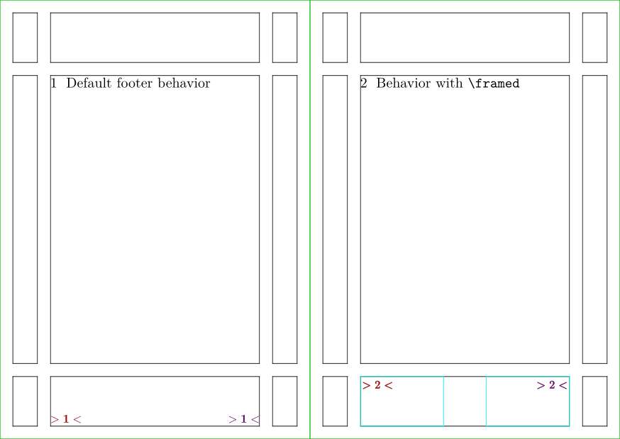
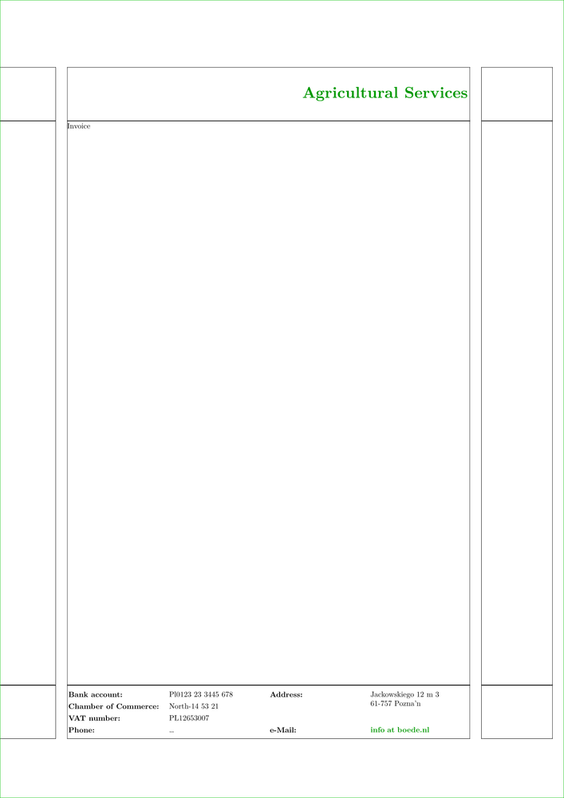
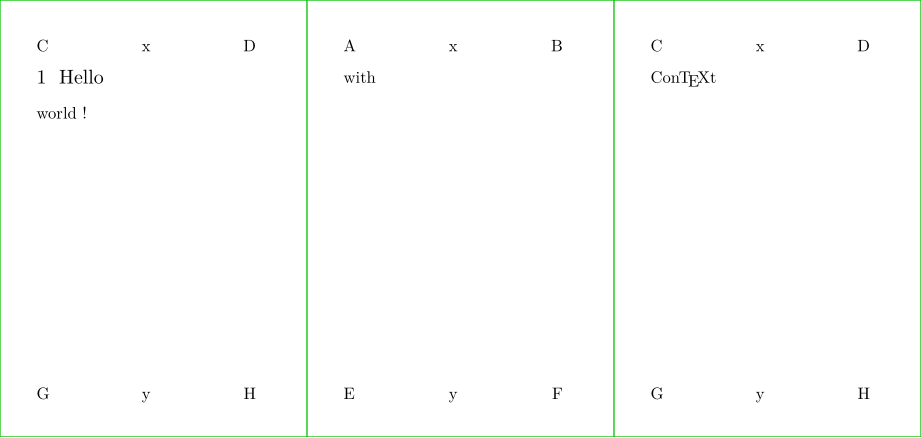

Contents
Defining the paper size
Set the page size and its orientation with \setuppapersize.
-
\setuppapersize[A8] \starttext Hello world ! \stoptext
-
\setuppapersize[A8,landscape] \starttext Hello world ! \stoptext
- 
Paper setup page provides further important features and options.
Typesetting areas
A ConTeXt page is divided into 5 columns and 5 rows, giving 25 areas. as illustrated by the graphic below, which also shows the associated dimensions.
- 
- The row and column names are written along the edges of the page.
- The arrows correspond to layout dimensions;
- the more important a dimension is (i.e. the more of the layout is pushed around when you change it), the thicker its arrow and the larger its name.
-
From left to right, one encounters
leftedge,leftmargin,text,rightmargin, andrightedge. -
From top to bottom, the areas are called:
top,header,text,footer,bottom.
E.g.
-
leftmarginis the margin area to the left of the main text area, -
{leftmargin,bottom}is below it, at the same height as thebottomarea, -
in between the two lies the area
{leftmargin,footer}.
Defining the layout
Positioning the areas is by setting the following dimensions using \setuplayout[backspace=5cm,...]. The dimensions are mentioned in order of how ‘primitive’ they are: e.g. altering the topspace pushes around all other vertical dimensions, but altering the header affects only the headerdistance and the textheight.\
Use \showframe in the setup area to visualize the typesetting areas.
When you define a page layout, it's always a right page that you're defining; if you use a double page layout, 'right' and 'left' values are mirrored on a left page. Doublesided typesetting is activated with \setuppagenumbering[alternative=doublesided].
Now let's proceed in order:
-
Set the
backspaceandwidth, and thetopspaceandheight. Thewidthis the width of the main typesetting area; thebackspaceis its distance from the left edge of the page. Theheightis the distance from the top of the header to the bottom of the footer ; thetopspaceis the distance from the top edge of the page to the top of the header. -
Set the
headerandheaderdistance, and thefooterandfooterdistance. Theheaderis the vertical size of the header area; theheaderdistanceis the distance from the header area to the text area. Thefooterandfooterdistancework likewise. -
Once the header(distance) and footer(distance) are subtracted from the
height, what remains is thetextheight: the height of the main typesetting area. Although it would be very useful, you cannot set this dimension directly. -
If you want to typeset anything above the header, define
topdistance(the distance from the top of the header to the bottom of the topmost typesetting area) andtop(the height of the topmost typesetting area). For typesetting below the footer, definebottomdistanceandbottom. -
As for the horizontal dimensions apart from the
width: starting at the left edge of the main text area, and moving away from the center, one first sets theleftmargindistance; then one sets the widthleftmarginof the margin typesetting area; then one sets theleftedgedistance; and then there is theleftedgetypesetting area. On the right:rightmargindistance,rightmargin,rightedgedistance,rightedge.
| TODO: illustrate the middle and fit options for width and height, Command/setuplayout#Description (See: To-Do List) |
Examples layout
-
\setuppapersize[A8] \showframe \setuplayout [topspace=2mm, %< Vertically height=70mm, header=4mm, headerdistance=1mm, footer=4mm, footerdistance=1mm, backspace=6mm, %< Horizontally width=40mm, margin=4mm, margindistance=1mm] \starttext Hello world ! \stoptext
- 
-
Other examples
- Cover pages: Cover pages (2013, 2019)
- Example of photo page layout (2010)
Adding headers and footers is done with \setupheadertexts and \setupfootertexts. Usually you use these command twice:
-
a first time with one argument
[argument]in order to define what will appear in the middle -
a second time with two
[arg1][arg2](or four if you work with a double-sided document, see below)
-
\setuppapersize[A8] \setuppagenumbering[alternative=doublesided] \setupheadertexts[B] \setupheadertexts[A][C] \starttext Hello world ! \stoptext
- 
You may also want to use the margin space or other areas. [text] area is the default.
-
\setuppapersize[A8] \setuppagenumbering[alternative=doublesided] \setupheadertexts[B] \setupheadertexts [margin] [A][C] % HERE \starttext Hello world ! \stoptext
- 
But usually you need useful information there. There are predefined keywords for popular values, like
-
[chapter] -
[section] -
[pagenumber] -
[date]
By default you have the page number in the middle of the header, like if you would have asked for \setupheadertexts[pagenumber]. If you don't want the pagenumber there,
you have to define \setupheadertexts [] in order to let this area empty.
Let's try another example:
-
\setuppapersize[A8] \setupheadertexts [] % To make it empty \setupheadertexts [date] [section] \setupfootertexts [pagenumber] \starttext \startsection[title=Hello] world ! \stopsection \stoptext
- 
You can customize the content, but then pay attention to give a group as argument, i.e. to provide your customization between {}
-
\setuppapersize[A8] \setupheadertexts [] % To make it empty \setupheadertexts [] [{\tfx\sc\getmarking[section]}] \setupfootertexts [{\star}] \setupfootertexts [{\color[darkred]{page \pagenumber}}] [] \starttext \startsection[title=Hello] world ! \stopsection \stoptext
- 
You may want to tweak the vertical and horizontal alignment of the header and footer content. The usual solution is to insert a \framed and to play with its options width, height, location, align.
For example:
-
\definepapersize[sheet][width=148mm,height=105mm] \setuppapersize[A7][sheet] % 74 x 105 mm \setuppaper[nx=2,ny=1] \setuparranging[XY] \setuplayout [topspace=3mm, % Vertically height=99mm, header=12mm, headerdistance=3mm, footer=12mm, footerdistance=3mm, backspace=12mm, % Horizontally width=50mm, margin=6mm, margindistance=3mm] \showframe \setupheadertexts [] % To make it empty \setupfootertexts [{\color[darkred]{\dm{\bf>\prefixedpagenumber<}}}] [{\color[darkmagenta]{\dm{\bf>\prefixedpagenumber<}}}] \starttext \startsection[title={Default footer behavior}] \stopsection \page \setupfootertexts [{\framed [frame=on, framecolor=cyan, width=2cm, height=max, location=bottom, foregroundstyle=\bf, foregroundcolor=darkred, align={flushleft,high}] {\dm{>\prefixedpagenumber<}}}] [{\framed [frame=on, framecolor=cyan, width=2cm, height=max, location=bottom, foregroundstyle=\bf, foregroundcolor=darkmagenta, align={flushright,high}] {\dm{>\prefixedpagenumber<}}}] \startsection[title={Behavior with \tex{framed}}] \stopsection \stoptext
- 
-
\setuppapersize[A4] \setupinteraction[state=start] \showframe \startsetups[Header] %< HERE \framed [height=\headerheight, align=lohi, frame=off, foregroundcolor=darkgreen, foregroundstyle=\bfd] {Agricultural Services} \stopsetups \startsetups[Footer] %< HERE \switchtobodyfont[8pt] \setupTABLE [width=.25\textwidth, frame=off] \setupTABLE[c][1,3] [foregroundstyle=bold, roffset=1ex, align=flushleft] \bTABLE \bTR \bTD Bank account:\eTD \bTD Pl0123 23 3445 678\eTD \bTD Address:\eTD \bTD[nr=2] Jackowskiego 12 m 3 \\ 61-757 Pozna’n\eTD \eTR \bTR \bTD Chamber of Commerce:\eTD \bTD North-14 53 21\eTD \eTR \bTR \bTD VAT number:\eTD \bTD PL12653007\eTD \eTR \bTR \bTD Phone:\eTD \bTD … \eTD \bTD e-Mail:\eTD \bTD \goto{info at boede.nl} [url(mailto:info@boede.nl)]\eTD \eTR \eTABLE \stopsetups \setupheadertexts [] \setupheadertexts [] [\setups{Header}] % HERE \setupfootertexts [] [\setups{Footer}] % HERE \starttext Invoice \stoptext
- 
Double-sided
The principle is the same, but you have
-
to declare that you work on a
[alternative=doublesided]document with \setuppagenumbering -
to setup both odd and even pages, so you have to provide four arguments
[arg1][arg2][arg3][arg4]to \setupheadertexts and \setupfootertexts (see these pages for the details).
-
\definepapersize[sheet][width=156mm,height=74mm] \setuppapersize[A8][sheet] \setuppaper[nx=3,ny=1] \setuparranging[XY] \showframe[edge] \setupheadertexts [x] \setupheadertexts [C] [D] [B] [A] \setupfootertexts [y] \setupfootertexts [G] [H] [F] [E] \starttext \startsection[title=Hello] world ! \page with \page \ConTeXt \stopsection \stoptext
- 